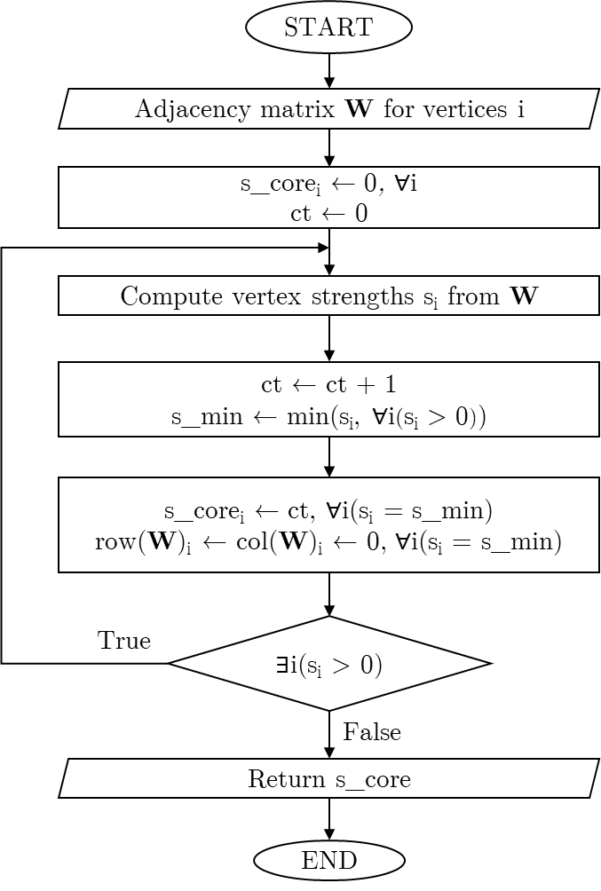
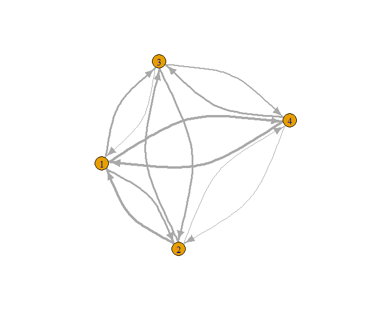
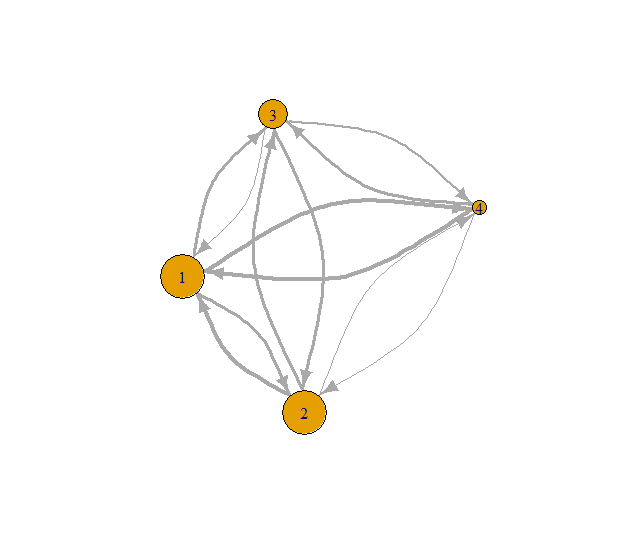
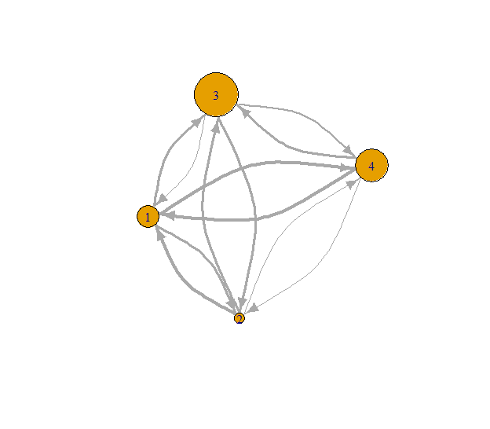
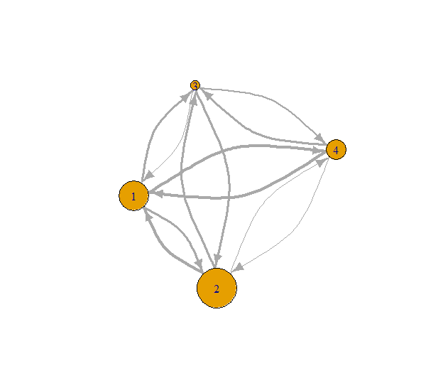

Installation
You can install the (CRAN) version of scoredec like so:
install.packages("scoredec")Alternatively, you can install the development version of scoredec using:
if (!require(remotes)) install.packages("remotes")
remotes::install_github("cadam00/scoredec")Citation
To cite the official (CRAN) version, please use:
Adam, C. (2024). scoredec: S-Core Graph Decomposition. R package version 0.1.0. Available at https://doi.org/10.32614/CRAN.package.scoredec.
Alternatively, to cite the latest development version, please use:
Adam, C. (2024). scoredec: S-Core Graph Decomposition (v0.1.1). Zenodo. https://doi.org/10.5281/zenodo.13743047.
s-core algorithm
s-core algorithm (Eidsaa and Almaas, 2013) is a variation of the traditional k-core algorithm. In particular, it is used for decomposing graph using the connections of the vertices. However, s-core is not restricted to only binary adjacency matrix like k-core algorithm (connected/not connected), but connectivity weights are utilized. A clear R implementation of the algorithm is done on brainGraph R package (Watson, 2024).
An expression of the flow chart for this s-core algorithm is shown on Fig. 1. Note that the implementation of the scoredec package is has some minor but significant differences, allowing it to be much more time and memory efficient.

Fig. 1: s-core algorithm flowchart.
Example applications
Example undirected graph
# Import libraries
library(scoredec)
library(igraph)
# Create a dummy undirected graph
set.seed(42)
n <- 4
W <- matrix(runif(n^2),n)
W[lower.tri(W)] <- t(W)[lower.tri(W)]
diag(W) <- 0
# Print adjacency matrix
print(W)## [,1] [,2] [,3] [,4]
## [1,] 0.0000000 0.6417455 0.6569923 0.9346722
## [2,] 0.6417455 0.0000000 0.7050648 0.2554288
## [3,] 0.6569923 0.7050648 0.0000000 0.4622928
## [4,] 0.9346722 0.2554288 0.4622928 0.0000000
# Transform adjacency matrix to graph
g <- graph_from_adjacency_matrix(W, mode = "undirected", weighted = TRUE)
# Set seed for reproducible plot
set.seed(42)
plot(g,
edge.width=E(g)$weight * 5 # make connection weight lines thicker
)

Fig. 2: Example undirected graph with connectivity lines sized by their weights.
It is clear on Fig. 2 that some connections are stronger than others, having greater connectivity weights. Moreover, the same vertex might has some strong and some weak weights. Therefore, decomposing the graph visually might get hard, especially on larger networks.
# Get s-core values
s_core_result <- s_coreness(g)
print(s_core_result)## [1] 3 1 2 3
# Plot result from s_coreness
# Set seed for reproducibility
set.seed(42)
plot(g,
edge.width = E(g)$weight * 5, # make connection weight lines thicker
vertex.size = s_core_result * 10
)

Fig. 3: Example undirected graph with vertices sized by their s-coreness.
It is shown on Fig. 3 that vertices 1 and 4 have higher coreness compared to all the other vertices, while vertex 2 has the smallest one. Note that for undirected graphs the mode ("all","in" or "out") does not matter:
all.equal(s_core_result, s_coreness(g, mode = "in"))## [1] TRUE
all.equal(s_core_result, s_coreness(g, mode = "out"))## [1] TRUETherefore, for efficiency reasons, choosing mode = "in" or mode = "out" is preferred, as long as the sum of adjacency matrix with its transpose for transforming it to undirected is not needed.
Example directed graph
# Create a dummy directed graph
set.seed(42)
n <- 4
W <- matrix(runif(n^2),n)
diag(W) <- 0
# Print adjacency matrix
print(W)## [,1] [,2] [,3] [,4]
## [1,] 0.0000000 0.6417455 0.6569923 0.9346722
## [2,] 0.9370754 0.0000000 0.7050648 0.2554288
## [3,] 0.2861395 0.7365883 0.0000000 0.4622928
## [4,] 0.8304476 0.1346666 0.7191123 0.0000000
# Transform adjacency matrix to graph
g <- graph_from_adjacency_matrix(W, mode = "directed", weighted = TRUE)
# Set seed for reproducible plot
set.seed(42)
plot(g,
edge.width=E(g)$weight * 5, # make connection weight lines thicker,
edge.curved = rep(0.4, ecount(g)) # make directions more visible
)
Fig. 4: Example directed graph with connectivity lines per direction sized by their weights.
As show on Fig. 4, finding coreness with both directions and weights is even harder. Therefore, the use of s-core algorithm is even more cruicial here. In correspondence to the use of in-degree and out-degree strength of vertices used on k-cores (Csárdi and Nepusz 2006; Csárdi et al. 2024), this algorithm is extended in the same way as well.
# Get total degree s-core values
all_s_core <- s_coreness(g, mode = "all")
print(all_s_core)## [1] 3 3 2 1
# Set seed for reproducibility
set.seed(42)
plot(g,
edge.width = E(g)$weight * 5, # make connection weight lines thicker,
edge.curved = rep(0.4, ecount(g)), # make directions more visible
vertex.size = all_s_core * 10
)
Fig. 5: Total degree s-coreness.
# Get in-degree s-core values
in_s_core <- s_coreness(g, mode = "in")
print(in_s_core)## [1] 2 1 4 3
# Set seed for reproducibility
set.seed(42)
plot(g,
edge.width = E(g)$weight * 5, # make connection weight lines thicker,
edge.curved = rep(0.4, ecount(g)), # make directions more visible
vertex.size = in_s_core * 10
)
Fig. 6: In-degree s-coreness.
# Get out-degree s-core values
out_s_core <- s_coreness(g, mode = "out")
print(out_s_core)## [1] 3 4 1 2
# Plot result from s_coreness
# Set seed for reproducibility
set.seed(42)
plot(g,
edge.width = E(g)$weight * 5, # make connection weight lines thicker,
edge.curved = rep(0.4, ecount(g)), # make directions more visible
vertex.size = out_s_core * 10
)
Fig. 7: Out-degree s-coreness.
References
Csárdi, Gábor, and Tamás Nepusz. (2006) “The igraph software package for complex network research.” InterJournal Complex Systems: 1695. https://igraph.org.
Csárdi, Gábor, Tamás Nepusz, Vincent Traag, Szabolcs Horvát, Fabio Zanini, Daniel Noom, and Kirill Müller. 2024. igraph: Network Analysis and Visualization in R. https://doi.org/10.5281/zenodo.7682609.
Eidsaa, M. and Almaas, E. (2013) “s-core network decomposition: A generalization of k-core analysis to weighted networks”, Phys. Rev. E., American Physical Society, 88, 062819. https://doi.org/10.1103/PhysRevE.88.062819.
Watson, C.G. (2024). “brainGraph: Graph Theory Analysis of Brain MRI Data”. R package version 3.1.0. https://doi.org/10.32614/CRAN.package.brainGraph.